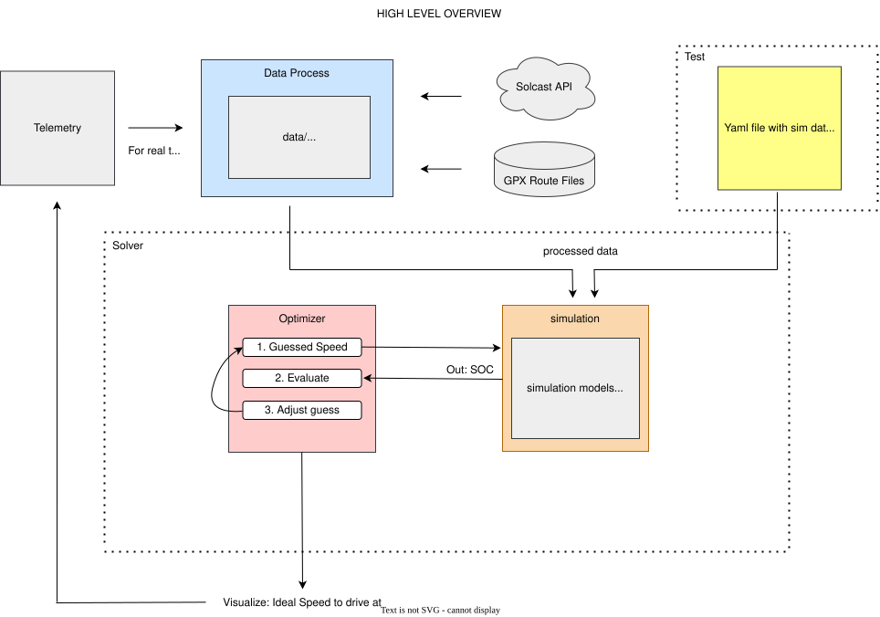

Context¶
The American Solar Car challenge is a long distance across the US for solar cars! The goal of the strategy team is to find a critical/optimal speed to drive at. We compete in the SOV class:
Single-Occupant vehicle teams will be ranked based on Official Distance driven (higher distance is best). Should teams tie on Official Distance, Official Elapsed Time will be used as a tie-breaker to determine ranking (shorter elapsed time is best).
Each day, there is a base route that our solar car must complete. At select checkpoints, there is the option to repeatedly drive around in a loop to increase event distance, so if we finish our base route early, this is a great avenue to gain additional distance. Clearly, therefore, the main goal of our solar car’s strategy team will be to maximize distance and minimize time for ASC 2026.
Defining the Problem Statement¶
Our goal is to choose a speed profile that maximizes expected official distance over a time period \([0, t]\), where \(t\) is the total driving time allowed for that day. Our constraint is that the battery state of charge (SOC) must remain above 20% at the end of the day.
Overview of Solar Car Strategy¶
Simulation¶
A good solar car strategy requires a good simulation model. Our current simulation models power lost through the drivetrain and power gained from the solar array.
Drivetrain¶
For the drivetrain, we calculate three main power components. Recall that power is force times velocity:
Thus, we model rolling resistance, aerodynamic drag, and road grade as:
where: - \(C_{rr}\) is the rolling resistance coefficient, - \(m\) is the mass of the vehicle, - \(g\) is gravitational acceleration, - \(\rho\) is air density, - \(C_d\) is the drag coefficient, - \(A\) is frontal area, - \(\theta\) is the road grade angle.
Solar Power¶
For solar power, we use:
where \(\eta_{panel}\) is panel efficiency and \(G\) is the estimated irradiance.
Net Battery Power¶
To account for drivetrain efficiency, we model the battery-side drivetrain power as:
Currently, the simulation does not yet account for regenerative braking, which is why the term \(\max(P_{grade}, 0)\) is used. In other words, downhill gravitational power is not currently recovered into the battery.
The net battery power draw is then
Here, positive terms represent battery power consumption, while solar power is subtracted since it offsets battery usage.
Since power is energy per unit time, over one timestep we have:
Optimization¶
The goal of the optimizer is to choose a speed profile that maximizes total distance traveled.
Let the speed profile be
where \(N\) is the number of time divisions in the optimization horizon.
For example, if we split a 9-hour driving period into 60-minute intervals, then \(N = 9\).
To compute how the car’s position changes over time, we start from the 1st order ODE:
Using forward Euler integration, distance evolves according to
Since our simulation is evaluated at discrete time steps rather than continuous, we approximate this differential equation using the Forward Euler method. Applying Forward Euler with timestep \(\delta t\) gives
Extrapolating:
Thus, maximizing final distance is equivalent to maximizing
Since \(d_0\) is constant, this is also equivalent to maximizing
In code, however, you may notice us minimizing \(-J(v)\), but they are essentially doing the same thing.
Battery Energy Constraint¶
Recall from the problem statement that SOC must remain above 20% at the end of the day.
At each timestep, battery energy evolves as
or equivalently,
The state of charge is defined as the remaining battery energy divided by the maximum battery energy:
Therefore, the end-of-day SOC constraint is
or equivalently,
Formal Optimization Problem¶
More formally, the optimization problem can be written as
Optimization Methods¶
Now there are several ways of optimizing for our problem, we use a gradient based one called SLSQP. In the future we may try other optimization algorithms.
Note on Benchmarking¶
In the future we will be benchmarking our optimization algorithms. To do this, we will evaluate them on smaller problem instances and compare their results to an exhaustic search (Tries every single possible vector). This allows us to determine whether the optimizer converges to the correct solution and how many iterations it requires to reach it.
To bench mark our simulation models, the plan is to get data from the car about speeds driven at versus SOC lost, and tweaking our model until we get similar results to ones observed.
Implementing it in Code:¶
The diagram below serves as a good model to what we do and plan on doing:
